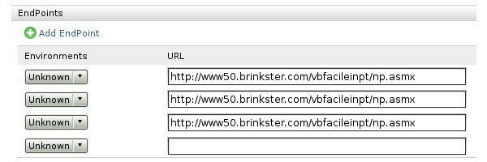
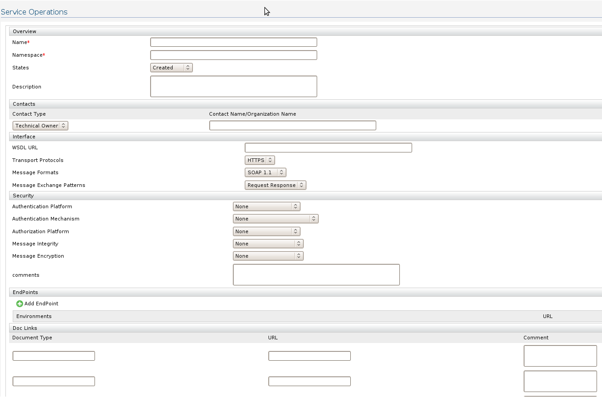

We are allowing users to get required information about a service by simply changing the given UI by changing XML configuration. We are generating the current Add Service UI by reading an XML which can be edited. You can simply edit the configuration XML by clicking Configuration->Service link in right menu of Governance Registry. User should aware of all the defined XML elements and attributes. Please refer the element descriptions to find the required elements for your changes.
This is the element which create HTML table for you all the required fields should be defined inside table element. Table has a mandatory element name which will be displayed as the heading of the table.
Ex: <table name="Overview"></table> ;
;
This elements specifies the required headings for the table, so this is obviously always a child element of table elements. Most often you have two column table so you will be having two headings. If you are having more than two columns in your table you have to specify the number of columns by giving a new attribute columns including the value as the number of columns.
<table name="Contacts"> <subheading> <heading>Contact Type</heading> <heading>Contact Name/Organization Name</heading> </subheading> </table>
This subheading is not mandatory and only if you have to add subheadings you can add them as below.
<table name="Doc Links" columns=3> <subheading> <heading>Document Type</heading> <heading>URL</heading> <heading>Comment</heading> </subheading> </table>
At the above example you can see that column number is not 2 and you have to specify the column number using attribute name columns. This will create three columns and add those subheading in to the table. if you are using more than two columns we are not printing the field name in front of the HTML field. So if there are more than two you can get a table only containing the required fields but we are not printing the name as usual. Ex:
<table name="Doc Links" columns="3"> <subheading> <heading>Document Type</heading> <heading>URL</heading> <heading>Comment</heading> </subheading> <field type="text"> <name>Document Type</name> </field> <field type="text"> <name>URL</name> </field> <field type="text-area"> <name>Document Comment</name> </field> <field type="text" skip="true"> <name>Document Type1</name> </field> <field type="text" skip="true"> <name>URL1</name> </field> </table>
This is the element which specifically defined a particular field. This field can be a text field drop-down list text a rea or our own field called option-text. Option text field is an identified useful single field which contains drop-down with a text field. Ex:

This contains a drop-down list and a text field, so if you want to add an element like this you can simply specify the field type as option-text. Field element can have couple of attributes and there's only one mandatory attribute for field element which is type. type specifies the field type which can be text,option, text-area, option-text.
Instead of having mandatory type attribute field element should have another child element called name to specify the name and to display at the beginning of the field. Ex: Here's an example of a field element which creates a text field.
<field type="text"> <name>Name</name> </field>
After you add this element under a table element you will be able to generate a text field like this.

You shouldn't use same name value for same type of field in a single table element. If you are adding a field with the type option or option-text you have to specify the set of values you want to add in to drop-down list. Ex: Here's an example of an option field which generate a drop down list with given values.
<field type="options"> <name>States</name> <values> <value>Created</value> <value>Tested</value> <value>Deployed</value> <value>Deprecated</value> </values> </field>

Example for option-text field, in here are having a drop-down and a text field but you only have to specify the type as option-text and give the value set and this will create the appropriate drop-down list and the text field.
<field type="option-text"> <name>Contact</name> <values> <value>Technical Owner</value><value>Business Owner</value> </values> </field>
If your field is a mandatory field you have to add a new attribute required and set the value as true. Default value is false for required attribute and you don't have to specify it for all the fields. If you put required as true the form will show an error box during submission if the field is not filled. Ex: This is the same example by adding required true.
<field type="text" required=true> <name>Name</name> </field>

There's an attribute maxoccurs which you can use only with field type option-text. We are reading only one value of this attribute which is unbounded. You can use this feature when you want add different number of fields (option-text) and allow users to add those fields dynamically by clicking add link. When you specify a particular option-text field with maxoccurs=unbounded we are only displaying link to add option-text fields with appropriate drop-down values and text field.
Ex: <table name="EndPoints"> <subheading> <heading>Environments</heading> <heading>URL</heading> </subheading> <field type="option-text" maxoccurs="unbounded"> <name>EndPoint</name> <values> <value>Unknown</value> <value>Dev</value> <value>QA</value> <value>Test</value> </values> </field> </table>
This is a normal option-text field with attribute maxoccurs set to unbounded. So with this configuration we are displaying something like following.
So users can click on Add EndPoint link and add required number of endpoints. As you can see the sub headers are printed after the Add EndPoint link and if you are having more than two sub headers you shouldn't use maxoccurs unbounded field in that table (This is a limitation in the current implementation). Ex:

WSO2 Governance Registry is providing complete Service Metadata Management features with Release 3.0.0 to do a better governance in your SOA system. In the new left panel there are set of operations supported in order to manage service metadata efficiently.
We are providing two main operations to manage service metadata in order to do a better governance in users SOA(Service Oriented Architecture) system.
Users can add it's service details in different ways like importing complete set of service details, importing WSDL of set of services in the SOA system, importing Schema's or Policies of set of services in the SOA system. Importing service details can be done using the upper part of the metadata menu which contains the links Add->Service, Add-Policy, Add->WSDL, Add->Schema.
This service import method is preferred when user doesn't have a proper description about the service with a WSDL but we provide a field to import WSDL in to Governance Registry. When user click on Add Service link user will be given a form to fill. Important thing in this form is user can simply reconfigure the default configuration.

Figure 1: Adding Service
User can configure the set of drop down lists which suit to users SOA system. This can be done by changing the current configuration by editing the content of set of resources in /governance/configuration/. There are set of resources as displayed in Figure 3 which you can browse and edit the XML content of the resource.

Figure 2: Configuring the Service
Ex: Default configuration have drop down list for Service states with the fields of Created Tested Deployed and Deprecated. If user wants to add a new Service in to this drop down list you have to add a new XML element like this in to the XML content of the resource /governance/configuration/states
<states>Designed<states>After adding new XML element save the content and to find the change, go to add service UI and see the states drop down. Likewise users can configure all the drop downs in the add service UI.Likewise users can configure all the drop downs in the add service UI.
In Add Service UI there are set of fields to fill and service name and service Namespace are mandatory. Most of the fields are obvious service informations and if you want to add a WSDL URL you can add it but the information from the WSDL will not be display when you go to edit these information. So we prefer you to use add->WSDL if you have a WSDL in the given resource. And you can add any number of endpoints to the given service by clicking add endpoint link and if user try to add more and more endpoints without filling previously added endpoint new endpoint will not be displayed.
After successfully adding a new Service user will be directed to newly added resource location which constructed based on the service Namespace which user shouldn't concern about. After direction user can see a resource with the given service name and if user give already exist service name service import operation will fail.
User can add Policy by traversing to the add Policy link. This form contains fields, policy URL and policy name. Governance Registry will automatically suggest a name for the policy once the URL is entered. Policy will be imported as a resource in to the Governance Registry. Successful import will redirect in to a page which list all the imported policies.
If a WSDL URL is available and you need to import service information to the Governance Registry you can use the "Add WSDL" option provided with the Governance Registry. Once the URL is provided to the UI, a name is automatically suggested for the resource in Governance Registry. When we import the given WSDL we are extracting certain number of details like service name, service namespaces and service endpoints and import the given WSDL as a resource and import a service resource which is very similar to the resource we are creating when user add a service using add service UI. So user can go to that resource and edit the rest of the information user couldn't import through WSDL import operation, like Authentication Platform, Authentication Mechanism etc.
Figure 3: Adding WSDL
WSO2 Governance Registry performs WS-I, WSDL validations on the wsdl provided once importing is done. The result is displayed under "properties" section of the imported WSDL resource.

Figure 4: WSDL validation
Like WSDL importing Governance Registry allow users to add Schema in to registry using add Schema UI. User have to give the schema location in to Schema URL and Schema name will be filling very similar in Add WSDL and Add Policy forms. Successful schema import will redirect in to currently available imported schema listing page.
Similar to WSDLs, WSO2 Governance Registry performs Schema validations on the wsdl provided once importing is done. The result is displayed under "properties" section of the imported Schema resource.